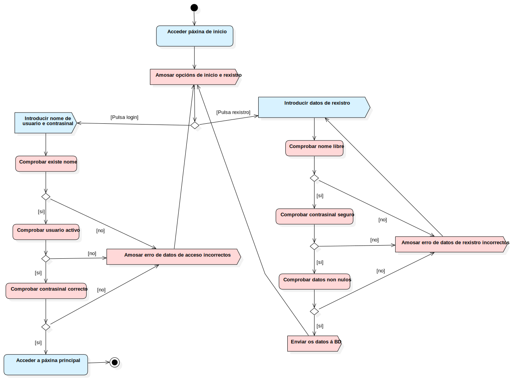

Acceso á aplicación
UMLActivity
ESaude
::
Use Case Model
::
Acceso á aplicación
Description
none
Diagrams

Acceder á aplicación
Groups
Usuario
Sistema
Nodes
Está o usuario rexistrado
Introducir nome de usuario e contrasinal
Introducir datos de rexistro
Acceder a páxina principal
Introducir os datos de usuario na base de datos de usuarios
ActivityFinalNode1
Mostrar error xénerico de datos de acceso incorrectos
DecisionNode1
DecisionNode2
DecisionNode3
MergeNode1
Nome de usuario xa existe
Contrasinal non é seguro
Datos persoais non son válidos
DecisionNode4
DecisionNode5
DecisionNode6
a
MergeNode2
Acceder páxina de inicio
Inicio
Action1
Amosar opcións de inicio e rexistro
Amosar erro de datos de acceso incorrectos
Enviar os datos á BD
Amosar erro de datos de rexistro incorrectos
Comprobar existe nome
Comprobar usuario activo
Comprobar contrasinal correcto
DecisionNode7
DecisionNode8
Comprobar nome libre
Comprobar contrasinal seguro
Comprobar datos non nulos
DecisionNode9
DecisionNode10
Edges
(Inicio→Acceder páxina de inicio)
(Acceder páxina de inicio→Está o usuario rexistrado)
[Pulsa login] (Está o usuario rexistrado→Introducir nome de usuario e contrasinal)
[Pulsa rexistro] (Está o usuario rexistrado→Introducir datos de rexistro)
(Acceder a páxina principal→ActivityFinalNode1)
(Introducir nome de usuario e contrasinal→Comprobar existe nome)
[ * ] (DecisionNode1→DecisionNode2)
[no] (DecisionNode1→Amosar erro de datos de acceso incorrectos)
[ * ] (DecisionNode2→DecisionNode3)
s (DecisionNode2→MergeNode1)
[ * ] (DecisionNode3→Acceder a páxina principal)
c (DecisionNode3→MergeNode1)
(MergeNode1→Mostrar error xénerico de datos de acceso incorrectos)
(Introducir datos de rexistro→Comprobar nome libre)
[ * ] (DecisionNode4→DecisionNode5)
[no] (DecisionNode4→Amosar erro de datos de rexistro incorrectos)
[ * ] (DecisionNode5→DecisionNode6)
[ contrasinal non seguro ] (DecisionNode5→MergeNode2)
[ * ] (DecisionNode6→Introducir os datos de usuario na base de datos de usuarios)
[ datos incorrectos ] (DecisionNode6→MergeNode2)
(Mostrar error xénerico de datos de acceso incorrectos→Amosar opcións de inicio e rexistro)
(Amosar erro de datos de rexistro incorrectos→Introducir datos de rexistro)
(Enviar os datos á BD→Amosar opcións de inicio e rexistro)
(Nome de usuario xa existe→MergeNode2)
(Contrasinal non é seguro→MergeNode2)
(Datos persoais non son válidos→MergeNode2)
(MergeNode2→a)
[si] (DecisionNode10→Enviar os datos á BD)
(Acceder páxina de inicio→Amosar opcións de inicio e rexistro)
(Amosar opcións de inicio e rexistro→Está o usuario rexistrado)
(Amosar erro de datos de acceso incorrectos→Amosar opcións de inicio e rexistro)
[si] (DecisionNode1→Comprobar usuario activo)
(Comprobar existe nome→DecisionNode1)
[si] (DecisionNode7→Comprobar contrasinal correcto)
(Comprobar usuario activo→DecisionNode7)
[no] (DecisionNode7→Amosar erro de datos de acceso incorrectos)
(Comprobar contrasinal correcto→DecisionNode8)
[si] (DecisionNode8→Acceder a páxina principal)
[no] (DecisionNode8→Amosar erro de datos de acceso incorrectos)
(Comprobar nome libre→DecisionNode4)
[si] (DecisionNode4→Comprobar contrasinal seguro)
(Comprobar contrasinal seguro→DecisionNode9)
[no] (DecisionNode9→Amosar erro de datos de rexistro incorrectos)
[si] (DecisionNode9→Comprobar datos non nulos)
(Comprobar datos non nulos→DecisionNode10)
[no] (DecisionNode10→Amosar erro de datos de rexistro incorrectos)
Properties
Name
Value
name
Acceso á aplicación
stereotype
null
visibility
public
isReentrant
true
isReadOnly
false
isSingleExecution
false
Owned Elements
Acceder á aplicación